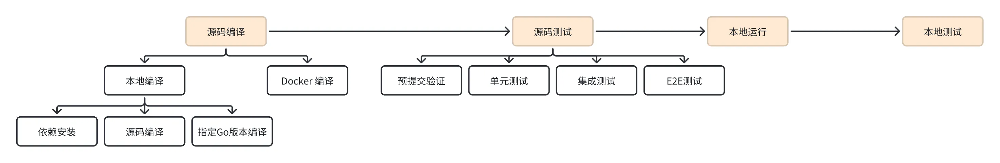
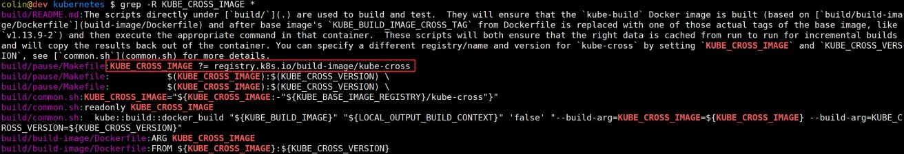
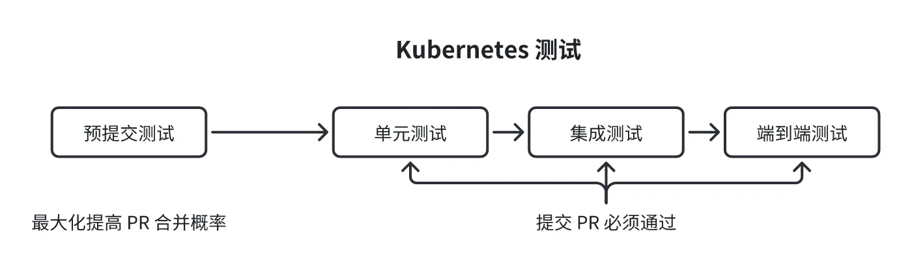
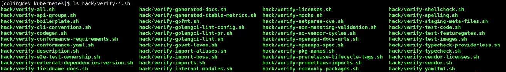
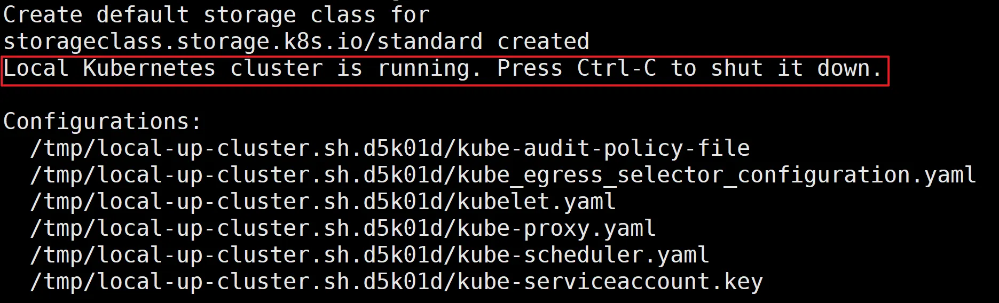

如何本地编译，快速运行 & 测试？

本节课根据研发流程来讲，编译 -> 测试 -> 运行 Kubernetes 集群 -> 本地测试（全链路测试）。接下来，我先来介绍下如何编译 Kubernetes 源码。Kubernetes 源码编译有以下 2 种方式：
- Docker 编译：在指定的 Docker 容器中，编译 Kubernetes 源码；
- 本地编译：直接在本地机器上编译 Kubernetes 源码。
因为使用 Docker 编译 Kubernetes 源码比较简单。所以，接下来，我先来介绍下如何使用 Docker 编译 Kuberentes 源码。
源码编译：使用 Docker 构建 Kubernetes
官方的 Kubernetes 发布文件都是使用 Docker 来构建的。使用 Docker 来编译源码，可以简化环境配置，并提供一致的编译和测试环境。
本小结，我来介绍下，如何使用 Docker 来编译 Kubernetes 源码。
安装 Docker
如果想用 Docker 来编译 Kubernetes 源码，首先要安装 Docker。在前面，我们已经安装过 Docker，这里就不再介绍如何安装 Docker。
如果，你之前没有安装过 Docker，可以参考以下方法来安装 Docker：
- MacOS 安装：参考 https://docs.docker.com/desktop/install/mac-install/。注意，这里需要确保 Docker 虚拟机至少有 8G 内存，否则编译可能会失败；
- Linux 安装：参考 https://docs.docker.com/installation/#installation；
- Windos（WSL2）安装：参考 https://docs.docker.com/docker-for-windows/wsl-tech-preview/
在使用 Docker 编译 Kubernetes 源码时，使用到了 buildx Docker CLI 插件。可以使用以下命令来安装：
$ sudo apt install -y docker-buildx-plugin
一些核心脚本
在使用 Docker 编译 Kubernetes 源码时，使用到了一些脚本文件，这些脚本文件都位于 build/ 目录中。在运行脚本时，最好位于 Kubernetes 源码根目录。脚本功能如下：
-
build/run.sh
-
在 Docker 容器中运行命令。常见的用法如下：
- build/run.sh make：在容器中仅构建 Linux 二进制文件。根据需要传递选项和软件包；
- build/run.sh make cross：为所有平台构建所有二进制文件。要仅构建特定平台，请添加 KUBE_BUILD_PLATFORMS=<os>/<arch>；
- build/run.sh make kubectl KUBE_BUILD_PLATFORMS=darwin/amd64：为特定平台构建特定二进制文件（在此示例中分别为darwin/amd64和kubectl）；
- build/run.sh make test：运行所有单元测试；
- build/run.sh make test-integration：运行集成测试；
- build/run.sh make test-cmd：运行 CLI 测试。
-
-
build/copy-output.sh
- 将 Docker 容器中 _output/dockerized/bin 的内容复制到本地_output/dockerized/bin。它还会复制构建过程中生成的特定文件模式。build/run.sh 调用了 build/copy-output.sh 脚本
-
build/make-clean.sh
- 清除 _output 目录的内容，删除任何在本地构建的容器映像并删除数据容器
-
build/shell.sh
- 进入构建 Kubernetes 源码的 Docker 容器中，该容器具有构建时的源码快照
基本流程
Kubernetes 使用 build/ 目录下的脚本来构建和测试 Kubernetes（用于构建 Kubernetes 源码的镜像称之为容器镜像 kube-build）。其中，Dockerfile 文件为 build/build-image/Dockerfile，内容如下：
# 这个文件创建了一个用于构建 Kubernetes 的标准构建环境。
ARG KUBE_CROSS_IMAGE
ARG KUBE_CROSS_VERSION
FROM ${KUBE_CROSS_IMAGE}:${KUBE_CROSS_VERSION}
# 将其标记为 kube-build 容器
RUN touch /kube-build-image
# 为了以非 root 用户运行，有时需要重新构建 go stdlib 包。
RUN chmod -R a+rwx /usr/local/go/pkg
# 运行集成测试用例，需要 /var/run/kubernetes 目录，该目录应该是可写的。
RUN mkdir /var/run/kubernetes && chmod a+rwx /var/run/kubernetes
# Kubernetes 源码挂载文件夹，后续的操作，都是在此文件夹下
ENV HOME=/go/src/k8s.io/kubernetes
WORKDIR ${HOME}
# 设置在 Docker 容器中构建产物的存放目录
ENV KUBE_OUTPUT_SUBPATH=_output/dockerized
# 在这里获取版本信息，因为我们不复制我们的 .git 文件。
ENV KUBE_GIT_VERSION_FILE=${HOME}/.dockerized-kube-version-defs
# 添加全局的 git 用户信息
RUN git config --system user.email "nobody@k8s.io" \
&& git config --system user.name "kube-build-image"
# 修复 $GOPATH 目录的权限
RUN chmod -R a+rwx $GOPATH
# 让日志消息使用正确的时区
ADD localtime /etc/localtime
RUN chmod a+r /etc/localtime
# 设置 rsyncd
ADD rsyncd.password /
RUN chmod a+r /rsyncd.password
ADD rsyncd.sh /
RUN chmod a+rx /rsyncd.sh
${KUBE_CROSS_IMAGE}:${KUBE_CROSS_VERSION} 指定了基础镜像和版本：
${KUBE_CROSS_IMAGE}：默认为 registry.k8s.io/build-image/kube-cross；
${KUBE_CROSS_VERSION}：默认为 cat "${KUBE_ROOT}/build/build-image/cross/VERSION（v1.30.0-go1.22.4-bullseye.0）。

你可以通过以下命令来直接设置 KUBE_CROSS_IMAGE 和 KUBE_CROSS_VERSION 的值：
$ export KUBE_CROSS_IMAGE=XXX
$ export KUBE_CROSS_VERSION=YYY
kube-build 镜像，首先会在 _output/images/build-image 目录中创建一个 "context" 目录，该目录中只存放用来参与构建的文件，以此来最小化构建镜像时需要打包的文件数。
在构建 Kubernetes 源码的时候，会基于 ${KUBE_CROSS_IMAGE}:${KUBE_CROSS_VERSION} 镜像，启动 3 个容器：
- data 容器：用来存储所有的数据，以支持增量构建；
- rsync 容器：用来将数据从 data 容器中拷贝出，或者从外面拷贝数据到 data 容器中；
- build 容器：用来执行源码编译。
data 容器在每次运行后保留，rsync 容器和 build 容器在每次运行后会被销毁。使用 rsync 来高效的在容器和宿主机之间进行数据传输，这会将会使用 Docker 选择的临时端口，你可以通过设置 KUBE_RSYNC_PORT 环境变量来修改此端口。
所有 Docker 容器名都附带一个哈希值，该哈希值是从文件路径派生而来的（以允许在诸如 CI 机器之类的环境中并行使用），还有一个版本号。当版本号发生变化时，所有状态都将被清除，并开始进行干净的构建操作。这使得构建基础设施可以被更改，并且通知 CI 系统需要删除旧的构建产物。
执行构建
Kubernetes 的 Makefile 提供了以下个规则，用来构建镜像：
-
本地构建规则：
- release：在本地构建一个 release；
- quick-release：构建一个 release，但是不执行测试；
- release-skip-tests：构建一个 release，但是不执行单元测试。
-
使用 Docker 容器构建规则：
- release-in-a-container：使用 Docker 容器来构建 release；
- release-images：构建一个 release 镜像；
- quick-release-images：构建 Docker 镜像，但是只构建 linux/amd64；
安装基础包
apt-get install make rsync -y
通常，我们可以使用以下命令来快速构建 Docker 镜像：
$ KUBE_BUILD_PLATFORMS=linux/amd64 KUBE_BUILD_CONFORMANCE=n KUBE_BUILD_HYPERKUBE=n make release-images GOFLAGS=-v GOGCFLAGS="-N -l"
- KUBE_BUILD_CONFORMANCE=n 和 KUBE_BUILD_HYPERKUBE=n 参数配置是否构建 hyperkube-amd64 和 conformance-amd64 镜像，默认是 y 构建，这里设置为 n 暂时不需要构建了。
- make release-images 表示执行编译并生成镜像 tar 包。
构建的 Docker 镜像，会以 tar 包的形式发布在 _output/release-images/amd64 目录中：
ll _output/release-images/amd64/
total 426996
drwxr-xr-x 2 root root 4096 5月 8 21:04 ./
drwxr-xr-x 3 root root 4096 5月 8 21:04 ../
-rw------- 2 root root 102862336 5月 8 21:04 kube-apiserver.tar
-rw------- 2 root root 95670272 5月 8 21:04 kube-controller-manager.tar
-rw------- 2 root root 65034752 5月 8 21:04 kubectl.tar
-rw------- 2 root root 99126784 5月 8 21:04 kube-proxy.tar
-rw------- 2 root root 74530304 5月 8 21:04 kube-scheduler.tar
生成的核心组件二进制可执行文件以及镜像，在 _output/release-stage/server/linux-amd64/kubernetes/server/bin/ 目录可以找到：
ll _output/release-stage/server/linux-amd64/kubernetes/server/bin/
total 806960
drwxr-xr-x 2 root root 4096 5月 8 21:04 ./
drwxr-xr-x 3 root root 4096 5月 8 21:04 ../
-rwxr-xr-x 1 root root 97947832 5月 8 21:04 kube-apiserver*
-rw-r--r-- 1 root root 37 5月 8 21:04 kube-apiserver.docker_tag
-rw------- 2 root root 102862336 5月 8 21:04 kube-apiserver.tar
-rwxr-xr-x 1 root root 90755256 5月 8 21:04 kube-controller-manager*
-rw-r--r-- 1 root root 37 5月 8 21:04 kube-controller-manager.docker_tag
-rw------- 2 root root 95670272 5月 8 21:04 kube-controller-manager.tar
-rwxr-xr-x 1 root root 60121272 5月 8 21:04 kubectl*
-rw-r--r-- 1 root root 37 5月 8 21:04 kubectl.docker_tag
-rw------- 2 root root 65034752 5月 8 21:04 kubectl.tar
-rwxr-xr-x 1 root root 70594744 5月 8 21:04 kube-proxy*
-rw-r--r-- 1 root root 37 5月 8 21:04 kube-proxy.docker_tag
-rw------- 2 root root 99126784 5月 8 21:04 kube-proxy.tar
-rwxr-xr-x 1 root root 69615800 5月 8 21:04 kube-scheduler*
-rw-r--r-- 1 root root 37 5月 8 21:04 kube-scheduler.docker_tag
-rw------- 2 root root 74530304 5月 8 21:04 kube-scheduler.tar
构建构件
Kubernetes 构建系统会将所有的构建产物存放到 _output 目录中。其中包括：
- 编译的二进制文件：例如 kubectl、kube-scheduler 等；
- 归档的 Docker 镜像；
如果想基于 Docker 镜像运行组件，那么需要使用 docker 命令从该目录中导入 Docker 镜像，例如：
$ docker import _output/release-images/amd64/kube-scheduler.tar k8s.io/kube-scheduler:$(git describe)
发布
build/release.sh 脚本将构建一个发布版本。它将构建二进制文件、运行测试，并（可选）构建运行时 Docker 镜像。构建产物主要是一个 kubernetes.tar.gz tar 文件。其中包括：
- 交叉编译的客户端实用程序；
- 根据平台，用于选择和运行正确客户端二进制文件的脚本（kubectl）；
- 示例；
- 各种云的集群部署脚本；
- 包含所有服务器二进制文件的 tar 文件。
此外，还有一些其他的 tar 文件被创建：
- kubernetes-client-*.tar.gz 特定平台的客户端二进制文件。
- kubernetes-server-*.tar.gz 特定平台的服务器二进制文件。
在构建最终发布 tar 文件时，它们首先被分阶段放置到 _output/release-stage 中，然后被打包并放入 _output/release-tars 中。
可再现性
make release 及其变体 make quick-release 提供了一个封闭的构建环境，能够为构建提供一定程度的可再现性。
Kubernetes 构建环境支持由可再现构建项目指定的 SOURCE_DATE_EPOCH 环境变量，该变量可以设置为 UNIX 纪元时间戳。这将用于嵌入在编译的 Go 二进制文件中的构建时间戳，也许将来还可以用于 Docker 镜像。
通常，我们通过以下方式来设置 SOURCE_DATE_EPOCH 环境变量：
SOURCE_DATE_EPOCH=$(git show -s --format=format:%ct HEAD)
源码编译：在本地操作系统构建 Kuberentes
首先，我们需要克隆 kubernetes 源码，并切换到 v1.30.2 分支：
$ cd $GOPATH/src/k8s.io/
$ git clone https://github.com/kubernetes/kubernetes.git
$ git checkout -b v1.30.2
操作系统配置
Kubernetes 是一个大型项目，编译它会使用大量资源。编译 Kubernetes 建议的资源配置如下：
- 内存 >= 8 GB；
- 磁盘存储空间 >= 50 GB；
Kubernetes 源码支持在 Linux、Windows、MacOS 上进行编译，不同操作系统的编译指令是不同的。因为时间、精力有限，没办法把所有平台的编译方式都给你介绍一遍，也没必要。所以，本文只展示如何在 Linux 上编译 Kubernetes 源码。
安装依赖软件包
准备好部署机器之后，还需要安装一些依赖工具。
安装最新的 GNU 开发工具
Kubernetes 项目仓库中包含了大量可以提升开发效率的脚本，这些脚本需要一些最新的 GNU 开发工具，在 Debian 12 上可通过以下命令，来安装最新版的 GNU 开发工具：
$ sudo apt update
$ sudo apt install build-essential
$ gcc -v # 确保 gcc 成功安装
$ make -v #确保 make 成功安装
安装其他依赖工具
安装 rsync
在构建 Kubernetes 时，还需要 rsync工具，rsync 是一个常用的文件同步和传输工具，大多数现代操作系统已经预装了 rsync。在 Debian 12 中，可以通过以下命令来安装：
$ sudo apt install rsync
$ rsync --version # 查看 rsync 是否被成功安装
安装 jq 工具
一些 Kubernetes 辅助脚本需要在你的开发环境中安装 jq，这是一个命令行 JSON 处理器，在 Debian 12 中，可以通过以下命令来安装：
$ sudo apt install jq
$ jq --version # 查看 jq 是否被成功安装
也可以直接访问 https://jqlang.github.io/jq/download/，来下载期望的 jq 版本。
安装 gcloud 命令
其实，我们用不到 gcloud 命令，但是在后面执行 ./cluster/kubectl.sh 脚本时，如果没有安装 gcloud 命令，脚本会报错。所以，这里我们也把 gcloud 命令安装上，安装命令如下：
$ wget 'https://dl.google.com/dl/cloudsdk/channels/rapid/downloads/google-cloud-cli-453.0.0-linux-x86_64.tar.gz?hl=zh-cn' -O google-cloud-cli-453.0.0-linux-x86_64.tar.gz
$ tar -xvzf google-cloud-cli-453.0.0-linux-x86_64.tar.gz
$ ./google-cloud-sdk/install.sh # 根据需要选择 yes or no 即可
安装 go
Kubernetes 的构建语言是 Go，所以还需要安装 go 编译命令。在本套课程的最开始的准备阶段，我们已经安装过 go 命令。这里需要注意，编译 Kuberentes v1.30.2，需要 Go 的版本 >= 1.19
安装 PyYAML
一些 Kubernetes 的测试用例，使用到了 PyYAML，因此需要在本地环境中安装它才能成功运行所有验证测试。你可以使用 PyYAML 文档 找到适用于你的平台的安装说明。
$ apt install -y python3-pip
$ apt install pipx
$ pipx ensurepath
安装 Etcd
Kubernetes 底层使用了 Etcd 作为数据存储引擎，如果想测试 Kubernetes，还需要安装 Etcd，可通过以下命令来安装：
$ ./hack/install-etcd.sh
$ export PATH="${PATH}:/root/kubernetes/third_party/etcd"
安装 bash
Kubernetes 中内置了大量的 bash 脚本，为了能够成功运行其中的 Shell 脚本，还需要安装 bash，版本应该 > 4.3。大部分操作系统默认已经安装了 bash，你可通过以下命令，来查看 bash 的版本：
$ bash --version
提示：如果你准备远程构建或者运行 e2e 测试，还需要安装 gcloud（Google Cloud 平台的命令行工具）命令。这里，我们不远程构建，也不运行 e2e 测试，所以不用安装 gcloud工具。如果你想安装，可以参考文档：Follow the gcloud installation instructions for your operating system。
编译指定的 Kubernetes 组件
Kubernetes 使用了 Makefile 工具，来提高项目的管理效率。我们可以使用 make 命令，来编译、检查、测试、打包、发布 Kubernetes 源码。具体可以通过 make help 命令来查看 Makefile 提供的可用规则。v1.30.2 版本的 Kubernetes 源码有多大 49 个 Makefile 规则。
我们可以根据需要执行 Makefile 规则。其中，最重要的规则是编译 Kubernetes 源码。Kubernetes 提供了不同的规则，用来对 Kubernetes 源码进行编译。根据使用频度和重要性，可分为以下 2 种编译类型：
- 基本编译方式：提供基本、重要的编译方式。这些编译方式也是日常编译经常用到的；
- 进阶编译方式：提供更多的编译方式，用来满足更多的编译需求和场景。
基本编译方式
我们可以通过构建一部分的 Kubernetes 组件，来发现并解决未就绪的环境问题，最终确保我们有一个就绪的环境，能够完整编译 Kubernetes。
我们可以在 make 命令行中，指定 WHAT 环境变量来编译指定的 Kubernetes 组件：
$ KUBE_BUILD_PLATFORMS=linux/amd64 make WHAT=cmd/<subsystem>
- KUBE_BUILD_PLATFORMS：指定编译的 OS 和 CPU 架构，提高编译速度。
- 内存至少要 4G，否则很可能会报 OOM 错误。这里建议内存 8G 起步。
如果不指定 KUBE_BUILD_PLATFORMS 环境变量，默认会构建编译时所使用的 OS 和 CPU 架构。
我们可以将 <subsystem> 替换为 kubernetes cmd/ 目录下的任何目录文件。例如可以使用以下命令来编译 kube-apiserver 组件：
$ make WHAT=cmd/kube-apiserver
上述命令会编译 kube-apiserver 组件，并将成功编译的二进制产出物存放在 _output/bin/ 目录中，文件名就是组件名，例如：
$ ls -lrt _output/bin/kube-apiserver
_output/bin/kube-apiserver
如果想构建所有的 Kubernetes 组件可以执行以下命令：
$ make all # 或者你也可以执行 make
当然，我们还可以使用最原始的编译方法，直接进入需要编译的组件 main 文件所在的目录中进行编译，例如：
$ cd cmd/kube-apiserver/
$ go build -v .
上述命令，会在当前目录下生成编译后的二进制文件 kube-apiserver。
进阶编译方式
Kubernetes 构建系统默认限制报告的 Go 编译器错误数量为 10 个。如果你想要移除这个限制，请在命令行中添加 GOGCFLAGS="-e"。例如：
$ make WHAT="cmd/kubectl" GOGCFLAGS="-e"
你还可以根据需要添加更多的 Go 编译 Flag，例如：
$ make WHAT=cmd/kube-apiserver GOFLAGS=-v GOGCFLAGS="-N -l"
- GOFLAGS=-v：Go 编译参数，开启 verbose 日志。
- GOGCFLAGS="-N -l"：Go 编译参数，禁止编译优化和内联，减小可执行程序大小。
如果你需要在已编译的 Kubernetes 可执行文件上使用调试检查工具，请设置 DBG=1。例如：
$ make WHAT="cmd/kubectl" DBG=1
要为所有平台交叉编译 Kubernetes，请运行以下命令：
$ make cross
要为特定平台构建二进制文件，请添加 KUBE_BUILD_PLATFORMS=<os>/<arch>。例如：
$ make cross KUBE_BUILD_PLATFORMS=windows/amd64
组件编译完成后，二进制可执行文件默认生成到 _output/bin 目录下。
使用特定版本的 Go 构建 Kubernetes
Kubernetes 支持你使用指定的 Go 版本，来编译 Kubernetes 源码。你只需要修改 .go-version 文件，将其中的 Go 版本改成你期望的 Go 版本：
$ cat .go-version
1.24.5
Kubernetes Makefile 在构建源码时，Go 版本选择规则如下：
-
如果操作系统已经安装了 go，并且 go 版本跟 .go-version 文件中的版本不一致，则默认使用 .go-version 文件中指定的版本；
-
如果你不需要出现以上行为，可以执行以下操作之一：
- 使用环境变量 GO_VERSION 来直接指定 Go 版本，例如：export GO_VERSION=1.20.10；
- 设置 FORCE_HOST_GO 环境变量为一个非空值，这会使 Kubernetes 构建脚本直接使用系统中的 Go 版本。
例如：
使用 GO_VERSION 直接指定 Go 版本
$ GO_VERSION=go1.22.2c make WHAT=cmd/<subsystem>
使用操作系统中安装的 Go 版本
FORCE_HOST_GO=y make WHAT=cmd/<subsystem>
Kubernetes 为什么要默认使用 .go-version文件中指定的 Go 版本呢？是因为 Kubernetes 系统很复杂，为了能够确保本地编译二进制文件的一致性，进而减少环境原因带来的问题，在编译时，Kubernetes 也统一了版本和 Go 版本。由此，可见 Kubernetes 源码在设计上是很严谨的。
源码测试：Kubernetes 测试快速入门
因为 Kubernetes 只有在单元测试、集成测试和端到端测试通过后，才会合并 Pull Request。所以，在 Kubernetes 代码开发完成后，还需要在本地成功运行所有的测试用例。
本小节只是一个测试的快速教程，如果你想了解更多关于 Kubernetes 源码测试的内容，可以参考以下 2 个文档：
Kubernetes 中测试分为以下 4 种：
- 预提交验证；
- 单元测试；
- 集成测试；
- E2E 测试。

预提交验证
预提交验证提供了一系列的检查和测试，以使你的 Pull Request 有最大的概率被接受。如果，你需要给 Kubernetes 贡献代码，则需要你在本地运行尽可能多的验证测试。
Kubernetes 仓库中，hack 目录下，包含了所有的预提交测试用例（执行 hack/verify-*.sh）：

可以使用以下命令来运行所有的预提交测试用例：
$ make verify
注意，执行 make verify 之前需要确保 Kubernetes 源码目录是干净的。可以通过以下命令来检查源码目录是否干净：
$ git status|grep 'nothing to commit, working tree clean' # 查找成功，说明干净
nothing to commit, working tree clean
如果某个测试失败，一般会有一个更新脚本来帮助解决问题。这些脚本位于 hack/update-*.sh 中。例如，hack/update-gofmt.sh 确保所有源代码文件格式正确。你可以运行以下命令，来执行所有的更新脚本：
$ make update
单元测试
新开发的 Kubernetes 源码要想合入 master 分支，还需要通过所有的单元测试用例。可以使用以下命令来执行单元测试：
$ make test
还可以使用 WHAT 选项来控制测试哪些包和子系统，使用 GOFLAGS 来更改测试的运行方式。例如，要针对一个包运行详细的单元测试，可以执行以下命令：
$ make test WHAT=./pkg/apis/core/helper GOFLAGS=-v
集成测试
新开发的 Kubernetes 源码要想合入 master 分支，还需要通过所有的集成测试用例。注意，集成测试依赖于 etcd 的正确安装。可以执行以下命令来运行集成测试：
$ make test-integration
可以阅读SIG Testing Integration Tests guide了解更多关于集成测试的介绍。
E2E 测试
端到端（E2E）测试提供了一种测试系统的端到端行为的机制。E2E 测试的主要目标是确保 Kubernetes 代码库的一致和可靠行为，特别是在单元测试和集成测试不足的领域。
E2E 测试构建测试二进制文件、启动测试集群、运行测试、然后关闭集群。这里要注意，运行所有的 E2E 测试需要非常长的时间！
你可以阅读 End-to-End Testing in Kubernetes和getting started guide for kubetest2 文档，来了解更多关于 E2E 测试的信息。
本地运行：本地快速启动 Kubernetes 集群
前置依赖
- Linux：本套课程推荐基于 Debian12 操作系统，Debian12 是一个 Linux 操作系统；
- 容器运行时；
- Etcd；
- Go；
- OpenSSL 和 CFSSL 工具：安装命令如下：
$ sudo apt install -y openssl
$ go install github.com/cloudflare/cfssl/cmd/cfssl@latest
快速启动 Kubernetes
启动步骤如下：
根据需要设置环境变量
设置 containerd 容器运行时的访问端点。
$ export CONTAINER_RUNTIME_ENDPOINT="unix:///run/containerd/containerd.sock"
$ export ETCD_PORT=2479
注意，这里需要使用 ETCD_PORT 环境变量重新设置 Etcd 的监听端口，否则会跟 Kind 集群使用的 Etcd 集群的监听端口起冲突。
你还可以根据需要设置更多的环境变量。可设置的环境变量可在 ./hack/local-up-cluster.sh 脚本顶部找到。
启用 CRI
v1.30.2 版本的 kubelet 通过 CRI 接口来调用底层的容器运行时，这里我们还要确保 containerd 启用了 CRI 插件。
在部署阶段我们安装了 docker，并使用 containerd 作为容器运行时，containerd 是一个开源的容器运行时，它能够管理完整的容器生命周期，包括镜像的拉取和管理，容器的执行和监控等。containerd 本身并不直接支持 Kubernetes 的 CRI （Container Runtime Interface），而是通过一个名为 cri 的插件来提供对 CRI 的支持。
在 containerd 的配置文件（通常位于 /etc/containerd/config.toml）中，disabled_plugins 是一个数组，用于指定需要禁用的插件。
如果你在 disabled_plugins 中指定了 ["cri"]，那么 containerd 将不会加载 cri 插件，也就是说，containerd 将无法直接作为 Kubernetes 的容器运行时使用。这种情况下，你可能需要通过其他方式（如使用 docker 作为容器运行时，而 docker 底层则使用 containerd）来运行 Kubernetes。
如果你希望 containerd 直接作为 Kubernetes 的容器运行时，那么你应该确保 cri 插件没有被禁用。你可以通过删除或注释掉 disabled_plugins = ["cri"] 这一行来启用 cri 插件。
请注意，修改 containerd 的配置后，你需要重启 containerd 服务才能使新的配置生效。在大多数 Linux 发行版中，你可以使用以下命令来重启 containerd：
$ sudo systemctl restart containerd
运行快速启动脚本
打开一个新的 Linux 终端，运行以下命令：
$ cd kubernetes
$ sed -i 's/etcd \-\-advertise-client-urls/etcd \-\-listen-peer-urls http:\/\/localhost:2382 \-\-advertise-client-urls/g' hack/lib/etcd.sh
$ ./hack/local-up-cluster.sh # 使用 root 权限启动，用来规避一些权限问题
上述命令，会构建并启动一个非常轻量的本地 Kubernetes 集群，包括一个 master 节点和一个 work 节点。你可以使用 CTRL + C 来关闭 Kubernetes 集群。
注意：
- 我们 kind 集群使用 etcd 的 --listen-peer-urls 默认监听地址为 http://localhost:2380，为了避免冲突，我们需要执行以上 sed 命令，将本地 kubernetes 集群的 etcd 的 --listen-peer-urls 设置为http://localhost:2382。
- 启动过程中，因为需要往/目录下拷贝一些权限，所以会弹出输入框，让你输入 root 用户的密码，记得输入下；
上述命令会启动 etcd、kube-apiserver、kube-scheduler、kubelet、kube-controller-manager 组件，这些组件的日志文件分别：
- /tmp/etcd.log;
- /tmp/kube-apiserver.log;
- /tmp/kube-scheduler.log;
- /tmp/kubelet.log;
- /tmp/kube-controller-manager.log;
如果，你已经编译过 Kubernetes 各组件源码，可以使用 -O 选项，来跳过编译步骤：
$ ./hack/local-up-cluster.sh -O
你可以使用 ./cluster/kubectl.sh 脚本，来与新创建的轻量级本地 Kubernetes 集群进行交互，./hack/local-up-cluster.sh 脚本会打印将要运行的命令。
./hack/local-up-cluster.sh 执行后，如果出现以下日志输出，恭喜你，说明你成功在本地安装了开发测试用的 Kubernetes 集群：

本地测试：本地 Kubernetes 集群测试
在本地快速运行一个 Kubernetes 集群之后，你一定想测试下 Kubernetes 集群是否成功安装，是否能够正常工作。这时候，你可以尝试通过 kubectl 工具访问新启动的 Kubernetes 集群，或者创建一个简单的 Pod。
运行一个容器
当 Kubernetes 集群运行起来之后，你可以使用 kubectl 命令行工具，来执行一些命令与本地 Kubernetes 交互：
$ export KUBECONFIG=/var/run/kubernetes/admin.kubeconfig
$ kubectl get pods
$ kubectl get services
$ kubectl get replicationcontrollers
$ kubectl run my-nginx --image=nginx --port=80
提示：不要使用 ./cluster/kubectl.sh 脚本，./cluster/kubectl.sh 脚本依赖 gcloud 等的正确安装。如果没有安装 gcloud组件，却运行了 ./cluster/kubectl.sh 会报以下错误：
$ ./cluster/kubectl.sh create -f test/fixtures/doc-yaml/user-guide/pod.yaml
python3: can't open file '/home/colin/lib/gcloud.py': [Errno 2] No such file or directory
运行用户定义的 Pod
你可以执行以下命令，来运行一个测试 Pod：
$ kubectl create -f test/fixtures/doc-yaml/user-guide/pod.yaml
pod/nginx created
可以使用以下命令，来查看 Pod 是否成功创建：
$ kubectl get pods
NAME READY STATUS RESTARTS AGE
nginx 1/1 Running 0 65s
如果 Pod 处在 Running状态，则说明集群成功安装。
一些小提示
- 无法创建 replicas > 1 的副本控制器
这是因为，你运行的测试集群只有 1 个节点。如果你想创建具有多个副本控制器的集群，可以尝试 Kind 集群。
- 修改 Kubernetes 源码后，如何重新运行集群？
你可以通过执行以下命令，来运行集群：
$ cd kubernetes
$ make
$ ./hack/local-up-cluster.sh
- kubectl get pods 或者 docker ps 没有显示容器
一个或多个 Kubernetes 守护程序可能已崩溃。在 /tmp 中跟踪每个守护程序的日志。
- Pod 无法通过主机名访问 Service
这是因为没有启动 DNS 服务，可以使用以下环境变量来启动 DNS 服务：
$ export KUBE_ENABLE_CLUSTER_DNS=true
$ export KUBE_DNS_SERVER_IP="10.0.0.10"
$ export KUBE_DNS_NAME="cluster.local"
- Pod 启动时报：`expected cgroupPath to be of format "slice:prefix:name" for sysnted service 错误
这是因为，机器上的容器运行时，使用了 systemd cgroup 驱动程序，但默认情况下 ./hack/localup-cluster.sh 使用 cgroupfs。需要将 CGROUP_DRIVER 环境变量设置为 systemd 以使二者保持一致：
$ export CGROUP_DRIVER=systemd
- 选择性运行 kubelet、kube-proxy
local-up-cluster.sh 提供了 START_MODE 环境变量，可供你选择性运行 kubelet、kube-proxy。例如，如果你不想运行 kubelet，可以执行以下命令：
$ export START_MODE=nokubelet
$ sudo ./hack/local-up-cluster.sh
START_MODE 支持以下值（字面意思，不多解释）：
- all
- kubeletonly
- nokubelet
- nokubeproxy
- nokubelet,nokubeproxy
如何魔改并测试 kube-scheduler？
为了方便测试，我基于 kubernetes 源码目录下的 hack/local-up-cluster.sh 脚本，又封装了以下 2 个脚本：
-
scripts/local-up-cluster/start-local-cluster.sh：一键启动本地 Kubernetes 集群，封装了以下 2 个核心功能：
- 为了避免跟 Kind 集群使用的 Etcd 端口起冲突，修改了 Etcd 启动时的端口设置；
- 保存 Kubernetes 各组件的启动命令到 k8s-cmdlines 目录下。
-
scripts/local-up-cluster/restart-component.sh：可以很方便的重启某个 Kubernetes 组件。
具体魔改步骤如下。
- 编译 Kubernetes 源码，并启动测试集群
因为，我们实际对 Kubernetes 进行魔改开发的时候，每次可能只会魔改一个组件，没必要每次都重启整个 Kubernetes 集群。为了达到此目的，我这里先启动整个 Kubernetes 集群，然后再重启其中需要的组件。为此我们需要，执行以下 2 步：
1） 启动整个 Kubernetes 集群；
2） 获取某个组件的启动命令，重启时使用。
启动本地 Kubernetes 集群的命令如下：
$ cd $GOPATH/src/k8s.io/kubernetes
$ make all
$ export LINUX_PASSWORD='onex(#)666' # 为了方便，你可以将该 export 命令加入 $HOME/.bashrc 文件中，但要注意保护 $HOME/.baserc 文件的安全
$ nohup $ONEX_ROOT/scripts/local-up-cluster/start-local-cluster.sh &
start-local-cluster.sh 会保存 Kubernetes 组件的启动命令行到 _output/k8s-cmdlines 目录下：
$ ls _output/k8s-cmdlines/
kube-apiserver kube-controller-manager kubelet kube-proxy kube-scheduler
进入 kubernetes 源码目录
$ cd $GOPATH/src/k8s.io/kubernetes
魔改 kube-scheduler 源码
为了，快速验证整个二次开发流程，我们这里只对 kube-scheduler 作最简单的代码修改。这里，我们在 Run 函数中打印一条 Hello World 消息（位于 cmd/kube-scheduler/app/server.go 文件中）：
// Run executes the scheduler based on the given configuration. It only returns on error or when context is done.
func Run(ctx context.Context, cc *schedulerserverconfig.CompletedConfig, sched *scheduler.Scheduler) error {
logger := klog.FromContext(ctx)
// ...
logger.Info("When you see this message, it means the code has been successfully modified and executed.")
// ...
}
编译修改后的源码
$ make WHAT=cmd/kube-scheduler
启动 kube-scheduler
$ $ONEX_ROOT/scripts/local-up-cluster/restart-component.sh kube-scheduler
I1124 11:30:46.917350 121581 flags.go:64] FLAG: --allow-metric-labels="[]"
I1124 11:30:46.917467 121581 flags.go:64] FLAG: --authentication-kubeconfig="/var/run/kubernetes/scheduler.kubeconfig"
I1124 11:30:46.917492 121581 flags.go:64] FLAG: --authentication-skip-lookup="false"
I1124 11:30:46.917506 121581 flags.go:64] FLAG: --authentication-token-webhook-cache-ttl="10s"
I1124 11:30:46.917516 121581 flags.go:64] FLAG: --authentication-tolerate-lookup-failure="true"
...
I1124 11:30:47.708178 121581 server.go:158] "When you see this message, it means the code has been successfully modified and executed."
...
可以看到，kube-scheduler 的输出中，包含了我们新增的 logger.Info 日志调用，说明代码魔改，并测试成功。之后，你可以根据需要对 kube-scheduler 作更多、更深入的魔改，并编译测试。
总结
如果想学习 Kubernetes 源码，最重要的开始就是能够编译并运行 Kubernetes 源码。本节课，详细介绍了 Kubernetes 提供的各种源码编译方式，并告诉你如何基于构建产物快速启动一个本地开发测试用的 Kubernetes 集群。
本节课，最后还给你演示了，如何魔改 kube-sheduler 组件，这是一个 Hello World 魔改示例。之后，你可以根据需要进行任何魔改，并在魔改过程中学习 Kubernetes 源码。
课后练习
克隆 Kubernetes 源码，并执行 make命令，编译所有的 Kubernetes 源码；
运行 ./hack/local-up-cluster.sh脚本，在本地快速启动一个测试用的 Kubernetes 集群；
魔改 kube-scheduler 源码，并重启 kube-scheduler 组件，观察魔改内容是否生效。